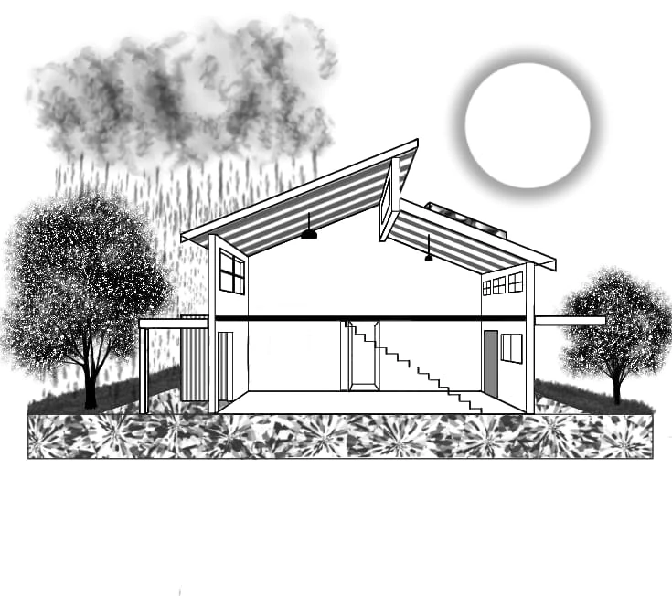

Cidades e Comunidades Sustentáveis
Incentivar escolhas habitacionais que promovam a resiliência urbana, a redução da pegada de carbono e o uso consciente do solo.
Para uma escolha mais consciente
Um guia prático e acessível para avaliar orientação solar, ventilação, água, energia e entorno antes de comprar um imóvel — com ferramentas interativas para testar na hora.
O projeto extensionista
Esta cartilha é fruto de um trabalho de extensão universitária dos alunos do curso de Arquitetura e Urbanismo da Faculdade FUMEC. A extensão tem como objetivo principal levar o conhecimento científico e acadêmico gerado na universidade para a comunidade, aplicando-o em soluções práticas para o cotidiano.
A escolha de uma moradia é uma das decisões mais importantes na vida de uma família. No entanto, muitas pessoas desconhecem como as características arquitetônicas e construtivas de um imóvel afetam diretamente o meio ambiente, a saúde dos moradores e o orçamento doméstico a longo prazo. Esta cartilha surge como um guia prático e acessível para orientar essa decisão de forma consciente.
Nossa baseSustentabilidade e a Agenda 2030
Trata-se de planejar, construir e habitar espaços minimizando os impactos ambientais negativos, otimizando o uso de recursos naturais (como água e luz solar) e promovendo a qualidade de vida e o bem-estar social.
Nosso projeto atua em consonância com a Agenda 2030 das Nações Unidas, impactando diretamente:
Incentivar escolhas habitacionais que promovam a resiliência urbana, a redução da pegada de carbono e o uso consciente do solo.
Estimular o uso de edificações que promovam a eficiência energética, a redução do desperdício de água e a gestão adequada de resíduos.
Sustentabilidade no dia a dia da família
Sustentabilidade não é apenas sobre “proteger o planeta”, é também sobre a qualidade de vida diária da sua família. Como a arquitetura sustentável afeta sua rotina?
Ver os 8 testesImóveis eficientes reduzem drasticamente o valor das contas mensais de energia elétrica e água.
Simular consumoAmbientes bem orientados e isolados mantêm temperaturas agradáveis durante o ano todo e reduzem ruídos externos incômodos.
Ver orientação solarAmbientes bem ventilados e com boa entrada de luz natural evitam o mofo e melhoram o humor e a produtividade dos moradores.
Consultar qualidade do arChecklist do comprador: o que observar
Na visita: observe • teste • compare • marque cada item.
0 de 8 testes concluídos
Demonstração prática
O que evitar na hora da escolha? Um imóvel sem planejamento sustentável gera custos altos e desconforto permanente.
Características comuns de um imóvel ineficiente:
As melhores práticas arquitetônicas. O imóvel ideal busca o equilíbrio entre tecnologia, materiais e soluções passivas.
Soluções que agregam valor e sustentabilidade:
Modelo em 3D
Modelo esquemático feito a partir do corte de uma casa sustentável. Gire com o mouse ou o dedo, aproxime e mude a estação e a hora para ver como o sol entra e onde ficam as soluções da cartilha.
Carregando o modelo 3D…
Sol calculado para Belo Horizonte, com o fundo da casa voltado para o norte (seta vermelha no chão).

Proposta de distribuição dos ambientes, com as medidas e as aberturas do modelo 3D. O térreo é aberto de propósito: o ar entra pela fileira de janelas, atravessa a casa e sai pela janelona e pelo lanternim, no alto.


| Código | Esquadria | Largura × altura | Peitoril | Qtd. |
|---|---|---|---|---|
| J1 | Janelona, com a metade de cima basculante | 8,76 × 1,60 m | 0,80 m | 1 |
| J2 | Fileira do térreo, maxim-ar de duas folhas | 1,16 × 1,10 m | 1,20 m | 5 |
| J3 | Janela alta, maxim-ar | 1,50 × 0,70 m | 0,85 m | 3 |
| P1 | Porta de entrada | 1,00 × 2,35 m | – | 1 |
| P2 | Porta de vidro de correr | 1,20 × 2,35 m | – | 1 |
Estudo para a cartilha, não é projeto executivo. O lavabo não tem janela e precisa de exaustão. A linha A indica onde passa o corte.
Ferramentas digitais
Hoje em dia, você não precisa ir até o imóvel várias vezes ao dia para entender o clima, a iluminação ou o entorno da região. Existem ferramentas gratuitas na internet que ajudam a fazer essa análise técnica de forma simples:
Abaixo, versões simplificadas feitas para este site. Escolha a cidade ou clique no mapa: as três ferramentas usam o mesmo local.
Sem conexão: as imagens do mapa não carregaram. Os cálculos de sol continuam funcionando.
Para onde está voltada a fachada principal (ou a janela da sala/quarto)?
Cálculos astronômicos feitos no próprio navegador (algoritmo SunCalc). Imagens de satélite: Esri World Imagery. Para a análise completa de sombras e horizontes, use o SunCalc.org e o Google Earth.
| Aparelho | Potência (W) | Qtd. | Horas/dia | Dias/mês | kWh/mês | Remover |
|---|
Acréscimos das bandeiras: valores definidos pela ANEEL, vigentes em 2026. A tarifa varia por distribuidora; confira a sua na conta de luz.
Considera 80% de desempenho do sistema e custo de disponibilidade mínimo de 50 kWh (bifásico). O retorno é simples: não inclui reajustes da tarifa, a perda de rendimento dos painéis nem a cobrança gradual do “Fio B” sobre a energia compensada, prevista na Lei 14.300/2022, que deixa o prazo real mais longo. Estimativa educativa: consulte a distribuidora e um projetista.
Carregando dados…
Previsão do IQA para as próximas 72 h
Fonte: Open-Meteo / CAMS (Copernicus). Atualizado: --
Recursos demonstrativos
Embora alguns imóveis sustentáveis possam ter um valor de compra inicial ligeiramente diferente, a relação custo-benefício ao longo do tempo é extremamente vantajosa.
| Métrica | Imóvel tradicional (não sustentável) | Imóvel sustentável |
|---|---|---|
| Preço de compra inicial | R$ 500.000,00 | R$ 530.000,00 |
| Conta de luz mensal (média) | R$ 450,00 | R$ 80,00 |
| Conta de água mensal (média) | R$ 180,00 | R$ 70,00 |
| Gasto operacional mensal total | R$ 630,00 | R$ 150,00 |
| Economia acumulada em 10 anos | — | R$ 57.600,00* |
| Valorização estimada (10 anos) | +15% (valor final: R$ 575.000) | +30% (valor final: R$ 689.000) |
Valores demonstrativos da cartilha. *Cálculo deste site, a partir da tabela: (R$ 630 − R$ 150) × 120 meses = R$ 57.600. Na cartilha original esta linha não traz valor.
Compra + gastos operacionais acumulados. Gráfico calculado por este site a partir dos valores da tabela.
Imóveis com eficiência energética e certificações ambientais valorizam mais rápido e têm maior facilidade de revenda.
A economia acumulada nas contas de luz e água ao longo de 5 a 10 anos compensa o investimento em tecnologias como energia solar.
Mídias explicativas
Para aprofundar seu conhecimento sobre o tema, selecionamos materiais complementares essenciais.
 3:18
3:18
Neste vídeo, a arquiteta Amanda Portella explica a importância do estudo de insolação no projeto arquitetônico para garantir ambientes mais confortáveis. Utilizando uma maquete ilustrativa, ela detalha como o sol se comporta ao longo do dia no Brasil.
PORTELLA, Amanda. Entendendo a influência do Sol na arquitetura. Direção: Daniel Nagahata. [S. l.]: Amanda Portella Arquitetura, 29 out. 2026. 1 vídeo (3 min 18 s), son., color. Disponível em: https://youtu.be/35_6leHUXo4. Acesso em: 29 out. 2026.
Assistir no YouTube 10:09
10:09
O vídeo aborda o conceito de arquitetura bioclimática e como ela pode ser aplicada na prática para tornar as construções mais sustentáveis e eficientes. A arquitetura bioclimática é definida como um conjunto de soluções que visam reduzir o impacto negativo das edificações no meio ambiente, priorizando o conforto dos usuários e a eficiência energética (0:23 – 0:59).
PROJETOU. Arquitetura Bioclimática – O que é e como aplicar. [S. l.]: YouTube, 29 out. 2026. 1 vídeo (10 min 9 s), son., color. Disponível em: https://youtu.be/coJdr4TBH18. Acesso em: 29 out. 2026.
Assistir no YouTubeConclusão
A escolha de um imóvel residencial vai muito além da simples aquisição de um espaço físico ou do investimento financeiro. Trata-se da definição do cenário onde a vida de uma família irá se desenvolver pelos anos seguintes. Ao integrar critérios de sustentabilidade nesse processo de decisão, transforma-se uma escolha puramente comercial em um ato de responsabilidade social, ambiental e econômica.
A realização deste projeto extensionista pela Faculdade de Arquitetura e Urbanismo da FUMEC reforça a importância da democratização do conhecimento acadêmico. Percebeu-se que muitos dos conceitos de arquitetura sustentável e bioclimática — como orientação solar, ventilação cruzada e análise de entorno — não exigem soluções complexas ou de altíssimo custo, mas sim informação e olhar crítico na hora da escolha.
Casa boa,
planeta feliz.